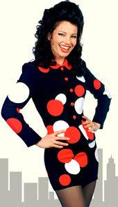
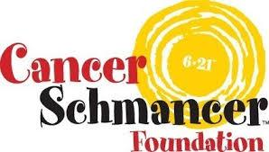

Fran Drescher
I had the great privilege of media coaching Fran Drescher for her home shopping appearances on HSN – she is funny and not much different than her character in the tv show. She is stunningly beautiful, smart and nice – it was a blast!

about Fran!Francine Joy “Fran” Drescher is an American film and television comedian, model, actress, producer, ordained Universalist minister, and activist. She is best known for her role as Fran Fine in the hit TV series The Nanny(1993–99), and for her nasal voice and thick New York accent.
Drescher made her screen debut with a small role in the 1977 blockbuster film Saturday Night Fever, and later appeared in American Hot Wax (1978) and Wes Craven’s horror tale Stranger in Our House (1978). In the 1980s, she gained recognition as a comedic actress in the films The Hollywood Knights (1980), Doctor Detroit (1983), This Is Spinal Tap (1984), and UHF (1989) while establishing a television career with guest appearances on several series. In 1993, she achieved wider fame as Fran Fine in her own sitcom vehicle The Nanny, for which she was nominated for two Emmy Awards and two Golden Globe Awards for Best Actress in a Comedy Television Series during the show’s run. She received further recognition for her performances in Jack (1996) and The Beautician and the Beast (1997) and reinforced her position as a leading sitcom star with Living With Fran (2005–2006) and Happily Divorced (2011–2013).
A uterine cancer survivor, Drescher is an outspoken healthcare advocate and LGBT rights activist, and is noted for her work as a Public Diplomacy Envoy for Women’s Health Issues for the U.S. State Department. Divorced from writer and producer Peter Marc Jacobson, she currently lives in Malibu, California.
Cancer Schmancer – Our Mission

Cancer Schmancer’s mission is to shift the nation’s focus from just searching for a cure to prevention and early detection of cancer in order to save lives. Cancer Schmancer Movement is dedicated to:Early Detection Stage 1 is the Cure! We educate & transform patients into medical consumers. Our Fran Vanprogram offers low income, un-insured & under-insured women free mammograms. Catch it on arrival 90% survival!
Prevention Did you know that 90% of cancer is related to the environment? That gives you enormous control over your risk. In 2012, our Detox Your Home initiative helped over 20,000 people eliminate harmful toxins IN their food, the cosmetics ON their skin, and cleaners AROUND their homes. Make Detox Your Home your new mantra. This year, we’re reaching out to the young generation around the world with our Detox Your Home school assembly program, and Fran continues her series of speaking engagements at universities and corporations.
Policy Change They say all roads lead to Rome, and in today’s world, Rome is Capitol Hill. We are working on the Carcinogen-FREE Label ACT, a bi-partisan bill introduced in 2012 so that consumers can make healthier choices and through purchasing power, dictate trends that influence the formulas of household products and food. We were instrumental in passing 2007’s Gynecologic Cancer Education & Awareness Act — by unanimous consent — the first of its kind in US history! No wonder Fran was named one of the Top 5 Celebrity Lobbyists by Washingtonian Magazine.

Free · live on Zoom every Sunday
The Secret Pitch Formula
Join Forbes live for the Pitch Secrets Masterclass. Over 80,000 people have learned the 7-second hook, the three pitch patterns behind $2.5 billion in sales, and how to close without sounding salesy. Free, with a gift worth $500 for registering.
Sundays, 2 p.m. PT / 5 p.m. ET. Registration and the Zoom link are at pitchsecretstraining.com.